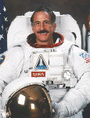

Lyndon B. Johnson Space Center
Houston, Texas 77058
|
National Aeronautics and Space Administration Lyndon B. Johnson Space Center Houston, Texas 77058 |
 |
Biographical Data |
||
NAME: Jeffrey A. Hoffman (Ph.D.)
NASA Astronaut (former)
PERSONAL DATA: Born November 2, 1944, in Brooklyn, New York, but considers Scarsdale, New York, to be his hometown. Married to the former Barbara Catherine Attridge of Greenwich, London, England. They have two sons, Sam and Orin. Dr. Hoffman enjoys skiing, mountaineering, hiking, bicycling, roller skating, swimming, sailing, and music. His parents, Dr. and Mrs. Burton P. Hoffman, are residents of White Plains, New York.
EDUCATION: Graduated from Scarsdale High School, Scarsdale, New York, in 1962; received a bachelor of arts degree in astronomy (graduated summa cum laude) from Amherst College in 1966, a doctor of philosophy in astrophysics from Harvard University in 1971, and a masters degree in materials science from Rice University in 1988.
ORGANIZATIONS: Member of the International Academy of Astronautics; the International Astronomical Union; the American Institute of Aeronautics and Astronautics; the American Astronomical Society; the Spanish Academy of Engineering; Phi Beta Kappa; and Sigma Xi.
SPECIAL HONORS: Awarded the Amherst College 1963 Porter Prize in Astronomy, 1964 Second Walker Prize in Mathematics, 1965 John Summer Runnells Scholarship Prize, and 1966 Stanley V. and Charles B. Travis Prize and Woods Prize for Scholarship. Elected to Phi Beta Kappa in 1965 and Sigma Xi in 1966. Received a Woodrow Wilson Foundation Pre-Doctoral Fellowship, 1966-67; a National Science Foundation Pre-Doctoral Fellowship, 1966-71; a National Academy of Sciences Post-Doctoral Visiting Fellowship, 1971-72; a Harvard University Sheldon International Fellowship, 1972-73; and a NATO Post-Doctoral Fellowship, 1973-74. Dr. Hoffman was awarded NASA Space Flight Medals in 1985, 1991, 1992, 1994 and 1996, NASA Exceptional Service Medals in 1988 and 1992, and NASA Distinguished Service Medals in 1994 and 1997. He was awarded the V. M. Komarov and the Sergei P. Korolyov Diplomas by the International Aeronautical Federation in 1991 and 1994. As part of the Hubble Space Telescope Rescue Team, he was awarded the National Aeronautic Association Collier Trophy in 1993, the Aviation Week and Space Technology Laurels for Achievements in Space in 1993, the American Astronautical Society Victor A. Prather Award in 1994, the Freedom Forum Free Spirit Award in 1994, and the American Institute of Aeronautics and Astronautics Support Systems Award in 1995.
SCIENTIFIC EXPERIENCE: Dr. Hoffman's original research interests were in high-energy astrophysics, specifically cosmic gamma ray and x-ray astronomy. His doctoral work at Harvard was the design, construction, testing, and flight of a balloon-borne, low-energy, gamma ray telescope.
From 1972 to 1975, during post-doctoral work at Leicester University, he worked on several x-ray astronomy rocket payloads. He also designed and supervised the construction and testing of the test equipment for use in an x-ray beam facility which he used to measure the scattering and reflectivity properties of x-ray concentrating mirrors. During his last year at Leicester, he was project scientist for the medium-energy x-ray experiment on the European Space Agency's EXOSAT satellite and played a leading role in the proposal and design studies for this project.
He worked in the Center for Space Research at the Massachusetts Institute of Technology (MIT) from 1975 to 1978 as project scientist in charge of the orbiting HEAO-1 A4 hard x-ray and gamma ray experiment, launched in August 1977. His involvement included pre-launch design of the data analysis system, supervising its operation post-launch, and directing the MIT team undertaking the scientific analysis of flight data being returned. He was also involved extensively in analysis of x-ray data from the SAS-3 satellite being operated by MIT. His principal research was the study of x-ray bursts, about which he authored or co-authored more than 20 papers.
NASA EXPERIENCE: Selected by NASA in January 1978, Dr. Hoffman became an astronaut in August 1979. During preparations for the Shuttle Orbital Flight Tests, Dr. Hoffman worked in the Flight Simulation Laboratory at Downey, California, testing guidance, navigation and flight control systems. He worked with the orbital maneuvering and reaction control systems, with Shuttle navigation, with crew training, and with the development of satellite deployment procedures. Dr. Hoffman served as a support crewmember for STS-5 and as a CAPCOM (spacecraft communicator) for the STS-8 and STS-82 missions. Dr. Hoffman has been the Astronaut Office Payload Safety Representative. He also worked on EVA, including the development of a high-pressure spacesuit, and preparations for the assembly of the Space Station. Dr. Hoffman was a co-founder of the Astronaut Office Science Support Group. During 1996 he led the Payload and Habitability Branch of the Astronaut Office.
Dr. Hoffman left the astronaut program in July 1997 to become NASA's European Representative in Paris, where he served until August 2001. His principle duties were to keep NASA and NASAs European partners informed about each others activities, try to resolve problems in US-European cooperative space projects, search for new areas of US-European space cooperation, and represent NASA in European media. In August 2001, Dr. Hoffman was seconded by NASA to the Massachusetts Institute of Technology, where he is a Professor in the Department of Aeronautics and Astronautics. He is engaged in several research projects using the International Space Station and teaches courses on space operations and design.
SPACE FLIGHT EXPERIENCE: Dr. Hoffman made his first space flight as a mission specialist on STS 51-D, April 12-19, 1985, on the Shuttle Discovery. On this mission, he made the first STS contingency space walk, in an attempted rescue of a malfunctioning satellite.
Dr. Hoffman made his second space flight as a mission specialist on STS-35, December 2-10, 1990, on the Shuttle Columbia. This Spacelab mission featured the ASTRO-1 ultraviolet astronomy laboratory, a project on which Dr. Hoffman had worked since 1982.
Dr. Hoffman made his third space flight as payload commander and mission specialist on STS-46, July 31-August 8, 1992, on the Shuttle Atlantis. On this mission, the crew deployed the European Retrievable Carrier (EURECA), an ESA-sponsored free-flying science platform, and carried out the first test flight of the Tethered Satellite System (TSS), a joint project between NASA and the Italian Space Agency. Dr. Hoffman had worked on the Tethered Satellite project since 1987.
Dr. Hoffman made his fourth flight as an EVA crewmember on STS-61, December 2-13, 1993, on the Shuttle Endeavour. During this flight, the Hubble Space Telescope (HST) was captured, serviced, and restored to full capacity through a record five space walks by four astronauts.
Dr. Hoffman last flew on STS-75 (February 22 to March 9, 1996) on the Shuttle Columbia. This was a 16-day mission whose principal payloads were the reflight of the Tethered Satellite System (TSS) and the third flight of the United States Microgravity Payload (USMP-3). The TSS successfully demonstrated the ability of tethers to produce electricity. The TSS experiment produced a wealth of new information on the electrodynamics of tethers and plasma physics before the tether broke at 19.7 km, just shy of the 20.7 km goal. The crew also worked around the clock performing combustion experiments and research related to USMP-3 microgravity investigations. During this mission, Dr. Hoffman became the first astronaut to log 1000 hours aboard the Space Shuttle.
With the completion of his fifth space flight, Dr. Hoffman has logged more than 1,211 hours and 21.5 million miles in space.
SEPTEMBER 2002
This is the only version available from NASA. Updates must be sought direct from the above named individual.
{kind=link}